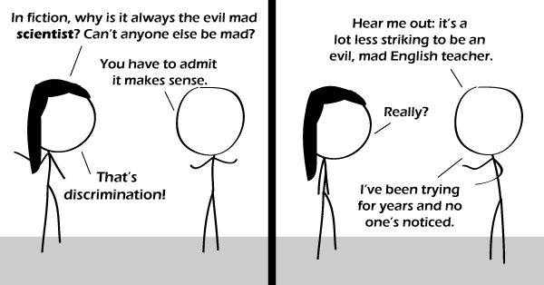

Comic JK 574
When I Feel Like It
⇤
<
?
>
⇥

⇤
<
?
>
⇥
Forum
.
RSS
.
Digg
.
Facebook
.
Reddit
.
Twitter
.
Stumbleupon
Enter your thoughts on number 574 here. Please, no spamming, trolling, phreaking, or mad evil. Is the alt text a reference to Sweeny Todd? Your mother is an evil mad army general. This is a social comment. But THIS is a comic comment. Evil mad bakers beat evil mad barbers. I resent this.... Microsoft, Apple and Monsanto have done a pretty good job at being evil so far. >I think it's fair to categorize those as scientists. >>But not MAD evil >>>How could they be mad with all that money An evil vet? > They'll be sorry they laughed at my FLEA MEDICINE ARMAGEDDON MACHINE! BWAHAHAHAHA! Let's put it this way - could an evil, mad English teacher blow up the world? >Only figuratively. >>But a mad scientist can only theoretically blow up the world. You need a mad engineer to actually build the thing that does it. >>Evil mad philosopher? >>>They could define the world to simply not exist....oh wait, that's an Evil Mad Mathematician.... >>>>Actually, philosopy and English are sciences, too. Just not Bèta-sciences. >>>>>"nog Bèta-science" - Experimental English? >>>>>>The way to do it might not be obviëus unless you're Dutch. >>>>>>>An evil mad English teacher is one that teaches Dutch instead. As an engineer, I'm proud to point out that XKCD had it right - most mad scientists are really mad engineers. > When did xkcd say this? >> I know I've seen the comic GP mentioned, but I'm not sure it was an XKCD comic. I can't find it there, anyway. Reverted deleted comments and vandalism, via the archive (lukeshu.ath.cx/1/comicjk/viewer.php) ~ LukeShu Evil Mad Religious Teacher,... at least they are not mythical